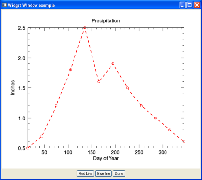

You can combine graphics within IDL widget applications by using the WIDGET_WINDOW function. Adding graphics to widget applications gives you the functionality of interactive graphic window with the ability to add your own GUI elements.

The code shown below creates the GUI (widget) application above. You can copy the entire block and paste it into the IDL editor, or enter
.edit plot_widget_doc
at the IDL command line to open the program.
PRO PLOT_WIDGET_DOC_EVENT, event
CASE TAG_NAMES(event, /STRUCTURE_NAME) OF
'WIDGET_BUTTON': BEGIN
WIDGET_CONTROL, event.id, GET_UVALUE = event_UV
; Retrieve the Widget Window
wDraw = WIDGET_INFO(event.top, FIND_BY_UNAME = 'DRAW')
WIDGET_CONTROL, wDraw, GET_VALUE = graphicWin
; Retrieve the plot with the NAME
; provided on plot creation
p = graphicWin['PLOT_WIDGET_DOC']
CASE event_UV OF
'DONE': WIDGET_CONTROL, event.top, /DESTROY
'RED': p.color='red'
'BLUE': p.color='blue'
ELSE: ; do nothing
ENDCASE
END
'WIDGET_BASE': begin
; Handle base resize events. Retrieve our cached padding,
; and our new size.
WIDGET_CONTROL, event.id, GET_UVALUE=pad, TLB_GET_SIZE=newSize
wDraw = WIDGET_INFO(event.top, FIND_BY_UNAME='DRAW')
; Change the draw widget to match the new size, minus padding.
xy = newSize - pad
WIDGET_CONTROL, wDraw, $
DRAW_XSIZE=xy[0], DRAW_YSIZE=xy[1], $
SCR_XSIZE=xy[0], SCR_YSIZE=xy[1]
end
ELSE: ; do nothing
ENDCASE
END
PRO PLOT_WIDGET_DOC
base1 = WIDGET_BASE(/COLUMN, TITLE='Widget Window example', $
/TLB_SIZE_EVENTS)
wDraw = WIDGET_WINDOW(base1, UVALUE='draw', UNAME='DRAW')
; Create the base for the button:
base2 = WIDGET_BASE(base1, /ROW, /ALIGN_CENTER)
; Create the action buttons.
redline = WIDGET_BUTTON(base2, VALUE='Red Line', UVALUE = 'RED')
blueline = WIDGET_BUTTON(base2, VALUE='Blue line', UVALUE='BLUE')
done = WIDGET_BUTTON(base2, VALUE = 'Done', UVALUE = 'DONE')
; Realize the widget (i.e., display it on screen).
WIDGET_CONTROL, base1, /REALIZE
; Register the widget with the XMANAGER, leaving the IDL command
; line active.
XMANAGER, 'PLOT_WIDGET_DOC', base1, /NO_BLOCK
; Cache the padding between the base and the draw
WIDGET_CONTROL, base1, TLB_GET_SIZE=basesize
xpad = basesize[0] - 640
ypad = basesize[1] - 512
WIDGET_CONTROL, base1, SET_UVALUE=[xpad,ypad]
; Retrieve the newly-created Window object.
WIDGET_CONTROL, wDraw, GET_VALUE = graphicWin
graphicWin.SELECT
PRECIP=[0.5,0.7,1.2,1.8,2.5,1.6,1.9,1.5,1.2,1.0,0.8,0.6]
TEMP=[30, 34, 38, 47, 57, 67, 73, 71, 63, 52, 39, 33]
DAY=FINDGEN(12) * 30 + 15
; Plot #1: In position #1 on the grid defined by LAYOUT
p=PLOT(DAY, PRECIP, NAME = 'PLOT_WIDGET_DOC', SYMBOL='o', $
LINESTYLE='--', TITLE = 'Precipitation', $
YTITLE = 'Inches', XTITLE= 'Day of Year', $
THICK=2, /CURRENT)
END